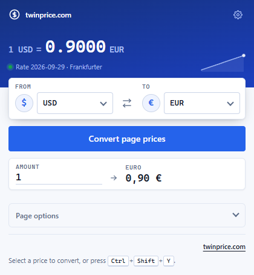
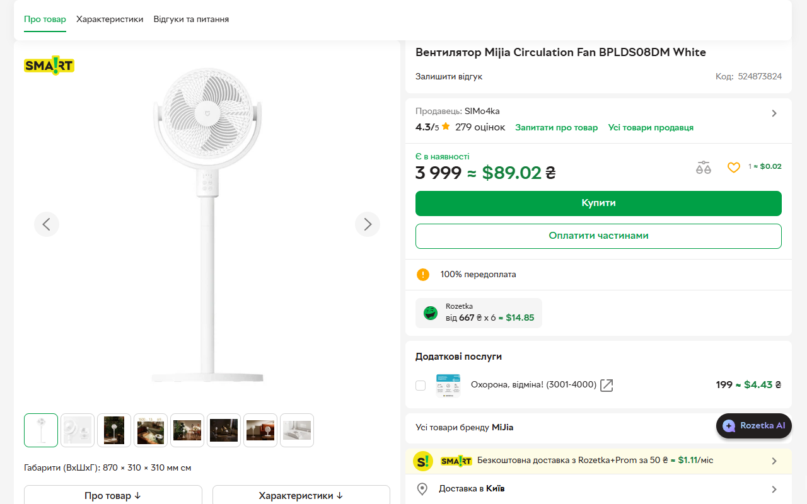

Adicione o Twinprice.
Instale a extensão gratuita pela Chrome Web Store ou pelo Firefox Add-ons.
UM POUCO DE CLAREZA PARA O SEU CARRINHO
O Twinprice é uma extensão gratuita de conversão de moedas para Chrome e Firefox. Veja os preços convertidos ao lado dos originais enquanto compra, ou destaque um único preço e clique em “Converter seleção”.
Instalação gratuita. Sem conta. Leia o guia de primeiros passos.
CASA & DECORAÇÃO
Um pouco de luz. Um espaço de trabalho melhor.
UM PREÇO É TUDO DE QUE VOCÊ PRECISA
Destaque um preço e clique no botão azul Converter seleção que aparece logo abaixo. O mesmo botão fica verde e mostra o resultado.
Demonstração animada · Taxa de exemplo: € 1 = US$ 1,10.
01 / FIQUE À VONTADE
Defina sua moeda uma vez.
E faça menos contas de cabeça na próxima vez que navegar.
Instale a extensão gratuita pela Chrome Web Store ou pelo Firefox Add-ons.
Escolha a moeda que você conhece. Deixe o AUTO detectar a original ou selecione-a você mesmo.
Abra uma página de compras e converta os preços. Ative a conversão automática nos sites que você escolher.
02 / SEU NAVEGADOR, UM POUCO MELHOR
Todo o contexto de que você precisa.
Bem ao lado do preço que você está olhando.
Mantenha o preço original e a conversão juntos. Situe-se sem abrir uma calculadora nem outra aba.
Ative a conversão automática nos sites que você escolher. O Twinprice lembra a moeda de origem ou o modo AUTO de cada um.
Escolha as cores e os formatos dos preços convertidos, com prévia ao vivo. Mantenha os originais ao lado ou mostre os preços convertidos no lugar deles.
Destaque um preço com a moeda e clique em Converter seleção logo abaixo. Obtenha a conversão apenas do preço de que você precisa. Você também pode converter uma página inteira ou digitar um valor na extensão.


03 / FEITO PENSANDO NA PRIVACIDADE
O Twinprice lê os preços onde eles estão: no seu navegador. Suas páginas de compras não precisam ir para nenhum outro lugar.
Leia a política de privacidade completaA detecção de preços e as alterações na página acontecem no seu dispositivo. O conteúdo das páginas, os valores dos preços e os URLs visitados não são enviados ao provedor de taxas.
As solicitações de taxas de câmbio à Frankfurter incluem códigos de moeda. Como em outras solicitações na internet, o serviço pode receber dados de rede, como o seu endereço IP.
O acesso às páginas da web permite que a extensão encontre preços compatíveis e ofereça a conversão. Desative o conversor para interromper a varredura, os avisos e a conversão automática.
04 / BOM SABER
Tem outra dúvida?
Obtenha ajuda ou relate um problema.
Siga o guia do usuário passo a passo para converter páginas e seleções. Os exemplos de compras explicam a conversão de euros para zlotys, cifrões ambíguos e diferenças na hora de pagar.
Abra uma página de compras: o Twinprice encontra os preços compatíveis e oferece convertê-los. Para abrir a extensão em si, clique no ícone de peça de quebra-cabeça na barra de ferramentas do navegador e escolha Twinprice; depois fixe-a para manter o botão à vista. No Firefox para Android, abra o menu e escolha Extensões.
Sim. Instalar e usar o Twinprice é gratuito e não exige conta. A extensão é de código aberto e não tem rastreadores de publicidade nem de análise.
O Twinprice está disponível para Chrome e Firefox no computador e para Firefox em celulares Android. Pesquise moedas por nome ou código na extensão. A conversão manual usa o catálogo de moedas ativas da Frankfurter; a detecção AUTO usa um conjunto menor e selecionado. Os pares de moedas disponíveis dependem do provedor de taxas.
Sim. Destaque um preço compatível, incluindo o símbolo ou o código da moeda (por exemplo, €89), e clique no botão azul “Converter seleção” logo abaixo. O botão fica verde e mostra o resultado na sua moeda preferida. Você também pode clicar com o botão direito no preço destacado e escolher “Converter o preço selecionado”.
Funciona com textos de preço compatíveis em páginas comuns, incluindo muitos preços adicionados enquanto você navega. Preços em imagens, em frames inacessíveis e em alguns layouts incomuns não podem ser convertidos. As páginas de configurações do navegador e as lojas de extensões são restritas. Se a moeda de origem não estiver clara, escolha-a manualmente no pop-up.
O Twinprice usa as taxas de referência da Frankfurter para facilitar a comparação. Seu banco, a operadora do cartão ou o serviço de pagamento podem usar outra taxa e cobrar tarifas. Quando não há taxas novas disponíveis, taxas recentes em cache podem ser usadas; a extensão avisa após 48 horas e não usa taxas com mais de sete dias. A demonstração deste site usa taxas de exemplo fixas.
Sim. Escolha “Restaurar os preços originais” no pop-up depois de converter. Em “Opções da página”, desative “Converter este site automaticamente” para esquecer as configurações automáticas desse site. Desative “Ativar o conversor” para interromper a varredura, os avisos e a conversão automática em todos os lugares.
MENOS CONTA DE CABEÇA. MAIS OLHAR VITRINES.
Dê um preço familiar ao seu próximo achado.
Instalação gratuita. Sem conta. Dados do produto e do responsável pela publicação.